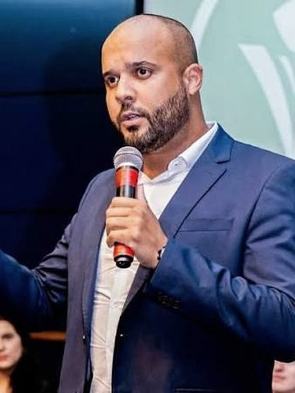
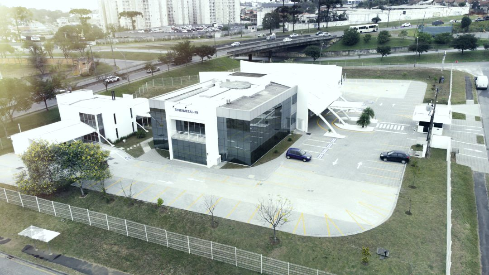

Imersão em Tribunal do Júri para profissionais do Direito
Dois dias dentro do Tribunal do Júri, em Curitiba.
Para advogados e profissionais do Direito que atuam, ou querem atuar, no plenário. São 14 palestrantes das ciências criminais e dois júris simulados completos, com técnica, estratégia e a prática real da advocacia criminal.
I · O evento
Feito para quem vive o Tribunal do Júri
Teoria, prática e experiência real da advocacia criminal, em dois dias de conteúdo.
O júri se aprende na tribuna: ouvindo quem atua no plenário, assistindo a um julgamento do começo ao fim e trocando experiência com colegas que enfrentam os mesmos desafios no plenário.
Palestras
Grandes nomes das ciências criminais falando de técnica, estratégia e vivência no Júri.
Júris simulados
Duas disputas completas e realistas, com acusação, defesa e veredito.
Networking
Dois dias ao lado de advogados e profissionais que atuam na área criminal.
II · Os júris simulados
Uma sessão de julgamento, do sorteio ao veredito
Nos dois júris simulados, você acompanha cada etapa como ela acontece no plenário, com o tempo correndo e os jurados decidindo.
Sorteio dos jurados
Dos 25 jurados convocados, sete são sorteados para o Conselho de Sentença.
Art. 447 do CPPInstrução em plenário
Declarações do ofendido, testemunhas e interrogatório do acusado, diante dos jurados.
Arts. 473 e 474 do CPPDebates
Uma hora e meia para cada parte, mais uma hora de réplica e outra de tréplica.
Art. 477 do CPPVotação dos quesitos
Cada jurado recebe uma cédula com sim e outra com não, e vota em sigilo.
Art. 486 do CPPIII · Palestrantes
Palestrantes confirmados
São 14 nomes das ciências criminais. O primeiro já está confirmado, e os outros 13 serão anunciados nos próximos dias.
Acompanhar no Instagram-

IV · Ingressos
Passaporte para os dois dias
As vagas são limitadas a 150 participantes.
Quesito único
Você estará no plenário da Tertúlia Criminal em 20 e 21 de novembro?
Passaporte Tertúlia
20 e 21 · nov · 2026- Acesso aos dois dias do evento
- Palestras com grandes nomes das ciências criminais
- Dois júris simulados
- Coffee breaks
- Networking
- Kit oficial Tertúlia
Tem cupom? Procure um colaborador ou chame no WhatsApp.

V · O local
Auditório do Sindimetal/PR
Rua Angelo Greca, 70 Atuba, Curitiba/PRCEP 82630-145
20 e 21 de novembro de 2026
Abrir no Google MapsVI · Quesitos
Dúvidas frequentes
Não encontrou sua resposta? Fale com a organização pelo WhatsApp.
1º quesitoQuando e onde acontece?
2º quesitoO que o passaporte inclui?
3º quesitoQuanto custa?
4º quesitoExiste cupom de desconto?
5º quesitoQuem são os palestrantes?
6º quesitoQuantas vagas existem?
Ingressos à venda
Nos vemos em Curitiba, nos dias 20 e 21 de novembro.
Auditório do Sindimetal/PR, Rua Angelo Greca, 70, Atuba.